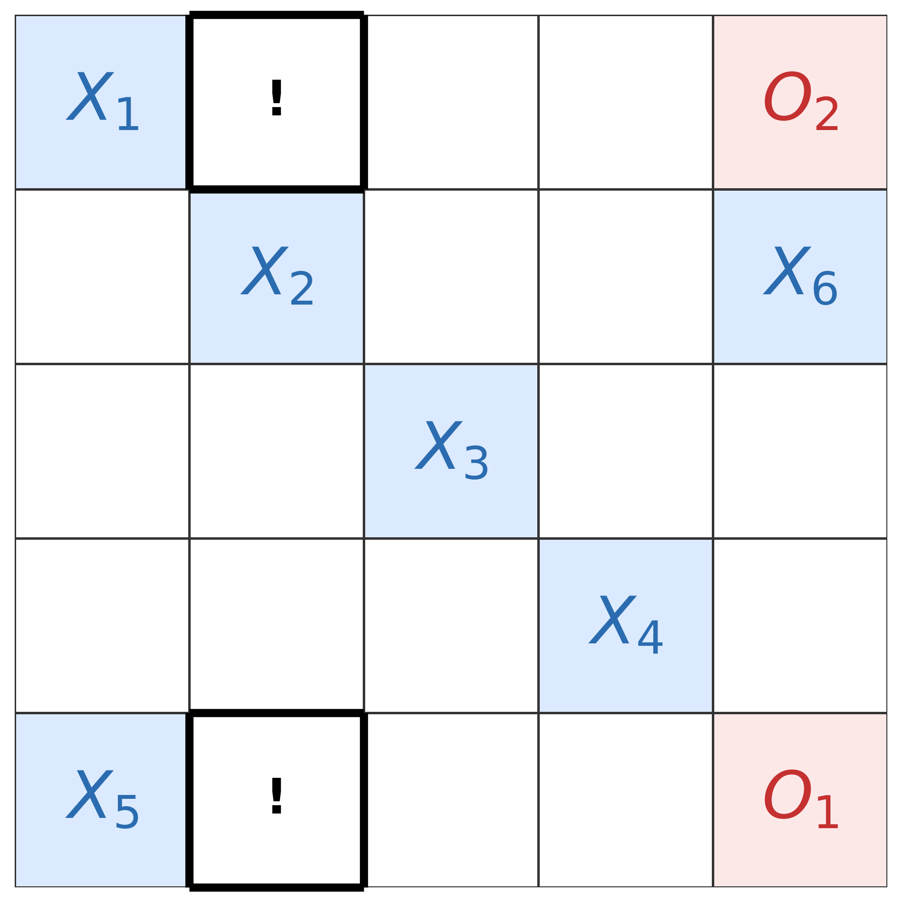
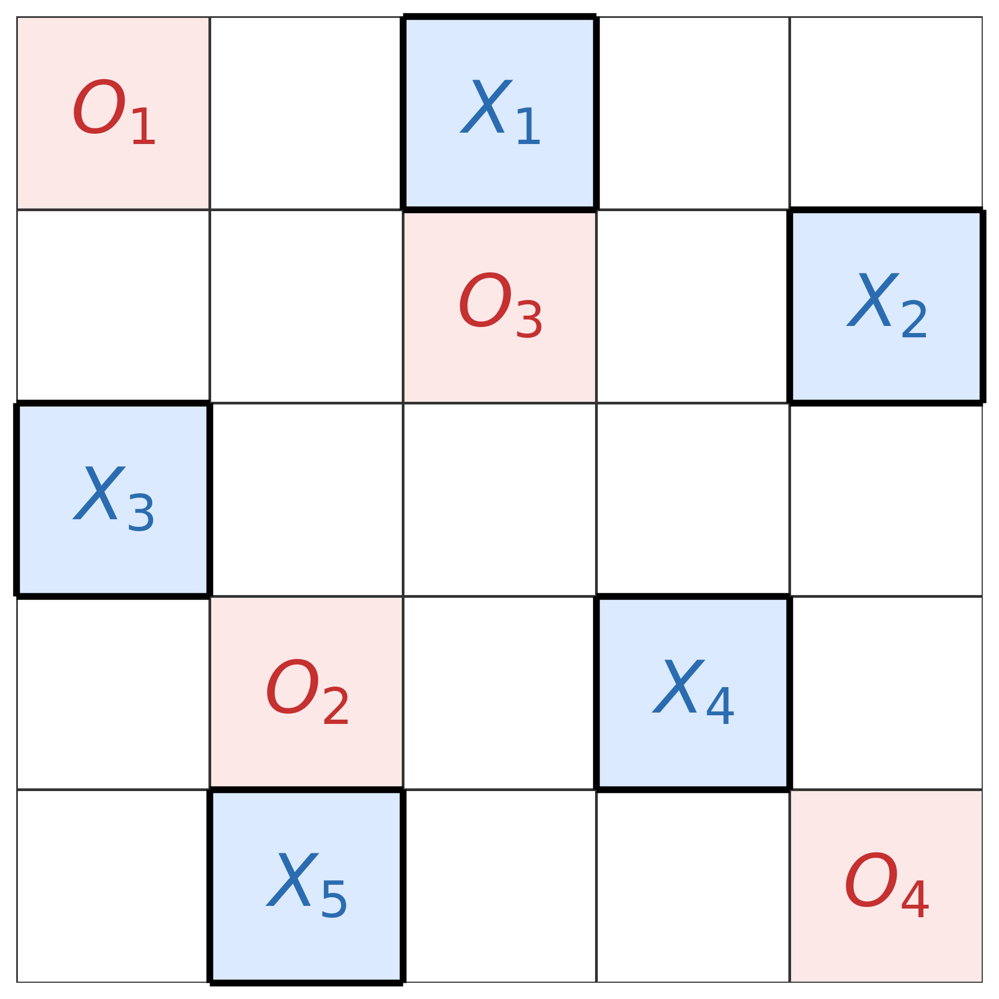

The main theorem that Player 1 wins the transversal achievement game for n≥4 is formalized and machine-checked in Lean 4.
Abstract
In the transversal achievement game on the $n\times n$ board, two players alternately claim cells, and the first to own a transversal—a set of $n$ cells of which no two share a row or column—wins. Ranđelović showed that the first player wins for every $n\ge4$, while the game is a draw for $n=2,3$. We give an independent proof that the first player wins for $n\ge4$ that additionally establishes a bound on the length of the win: the given strategy forces a win by ply $2n+3$, i.e.\ on the first player's $(n+2)$-nd move, for every $n\ge4$. The proof yields a strategy that is fully determined by a fixed rule on the current position and can thus be implemented directly. We isolate the use of the hypothesis $n\ge4$ to two steps in the analysis, explaining why the argument fails at $n=3$. An exhaustive computational search implementing the strategy verifies it against every legal defense for $n=4,5,6$, confirming both the strategy's validity and that the $2n+3$ bound is attained in these cases. The main theorem has also been formalized and machine-checked in Lean 4.
Problem
In the transversal achievement game on an n×n board, two players alternately claim cells and the first to own a transversal (n cells with no two sharing a row or column) wins. The question is which player wins and how quickly.
Approach
An independent proof shows the first player wins for all n≥4, giving a strategy that forces a win by ply 2n+3 and is fully determined by a fixed rule maintaining an open-block invariant with matching theory. Two structural lemmas replace the case analysis of prior work. An exhaustive game-tree search implements the strategy against every legal defense for n=4,5,6. The main theorem is also formalized and machine-checked in Lean 4.

(c) A double threat.
Results
The first player wins for n=1 and every n≥4, while n=2,3 are draws. The strategy forces a win by ply 2n+3, and exhaustive search confirms this bound is attained for n=4,5,6.

(a) Player 1 (X) win
n
terminal lines
nodes explored
max win ply
runtime
4
4 875
6 075
11
0.3 s
5
485 760
550 224
13
23.2 s
6
75 799 185
82 103 245
15
5 725 s
Summary of the exhaustive verification for n=4,5,6.